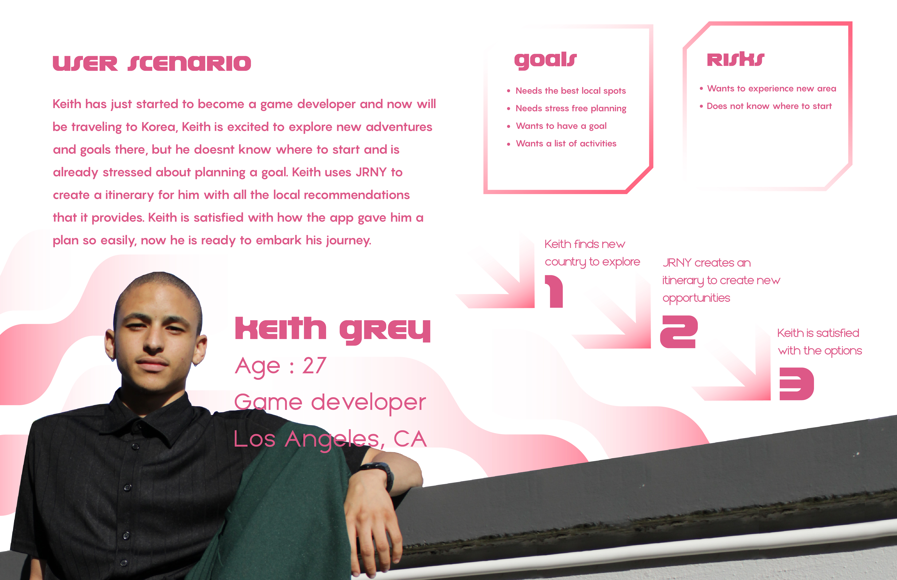

JRNY
JRNY empowers travelers of all kinds to create a tool that will help them set goals for a trip to embark on there next journey.
- Roles
- User Research, UX Design, UI Design
- Time
- 3 Week Project

Research & Analysis
Tools Used:
- User Survey (15 Responses)
- User Interviews (10 Total)
- Competitive Analysis
Problem: Planning beforehand is the main goal for most travelers, but it could be challenging at times which causes travelers to be distracted by how to develop a goal for the trip
Solution: JRNY is developing in planning goals for a trip for travelers who need the guidance on where to start.

Research
We began by conducting a proto persona to better understand who this app might be for. We then proceeded to conduct user interviews and narrowing down users would want and from there we went on to drafting how a user might discover this app and then on to drafting some storyboards to better understand how the user might use the app.
Ideation
During this stage, our goal was to envision how users would interact with our app and what some of its functions would be. Our target user was an average traveler on a work trip, moving across multiple countries. Since planning a trip seemed to be a major source of stress for most travelers, we aimed to create an app that would help users build their itinerary. The app would assist the user in deciding the best itinerary, taking into account their preferences and requirements.


{kind=link}